Projects
Selected applied VLM projects from BharatGen, focused on Indian document understanding and practical multimodal systems for large-scale deployment.
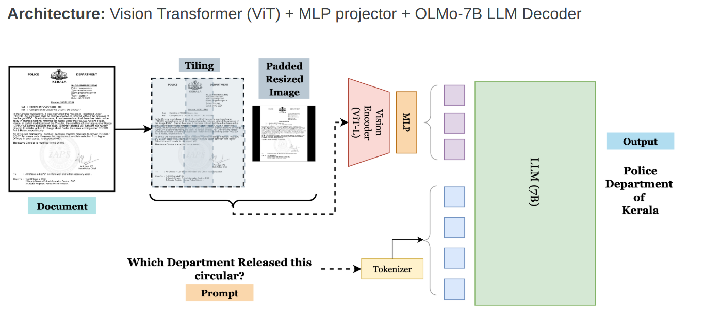
Launched at BharatGen Summit '25
description
Patram is a vision-language model for Indian document understanding, built over BharatDocs, a large Indian document corpus with 20M+ documents and 250M+ pages across English and 22 Indian languages.
- Pre-trained on 1M+ images for captioning, followed by 500K VQA annotations across 20+ document VQA task types.
- Built a multi-stage Synthetic QA pipeline using Qwen2.5-VL-72B-Instruct for extractive and abstractive QA, followed by verification and deduplication.
- Achieved state-of-the-art performance on key DocVQA benchmarks, including DocVQA and VisualMRC.
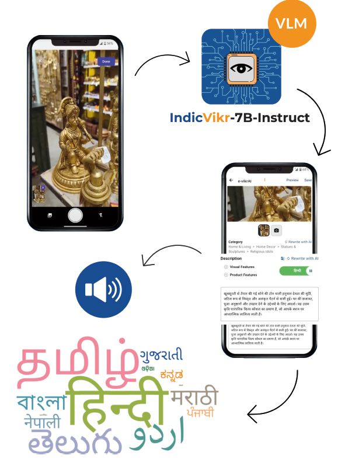
Presented at India Mobile Congress '24
description
e-vikrAI is an e-commerce VLM for auto-cataloging, generating SEO-optimized titles, hierarchical categories, descriptions, and product metadata directly from product images.
- Built a scalable e-commerce scraper for 22.8M+ products, covering category, product, metadata, and image pipelines with checkpointed resume and high-throughput ingestion.
- Developed a PoC mobile app with multilingual translation and text-to-speech for improved accessibility.
- Reduced cataloging time from 10 min/product manually to 6 sec/product, supporting seller onboarding for rural and non-English-speaking users.
Undergrad Research Projects
Exploratory research projects from my undergraduate years at IIT Hyderabad, spanning speech, vision, neuromorphic AI, quantum optimization, motion generation, and compiler embeddings.
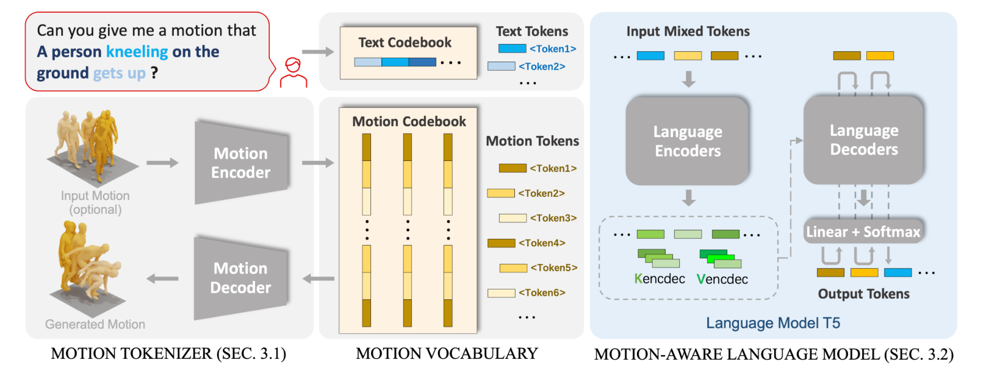
Spinal Cord and Movement Lab, IIT Hyderabad. Mentored by Dr. Mohan Raghavan.
description
- Worked on extending MotionGPT: Motion as a Language to yoga postures.
- Resolved engineering issues with the local GUI setup of the MotionGPT repository on a GPU server.
- Wrote scripts for interconversion between motion capture formats: C3D, AMASS, SMPL, ASF, and AMC.
- Worked on training MotionGPT from scratch using in-house MoCap data collected for yoga.
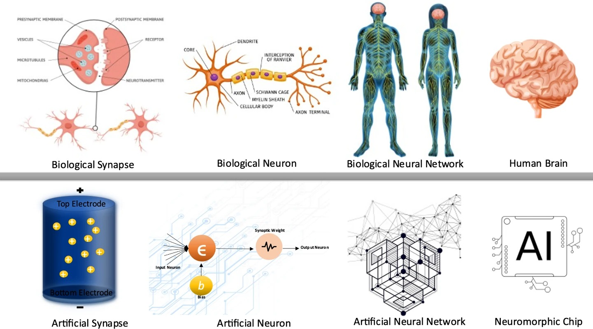
Computational Neuroscience Lab, IIT Hyderabad. Mentored by Dr. Mohan Raghavan.
description
- Worked on a survey on neuromorphic AI systems bridging neuroscience and neural networks.
- Studied biological inspirations from Hebbian learning and MP neurons to Hopfield networks, spiking neural networks, and cellular neural networks.
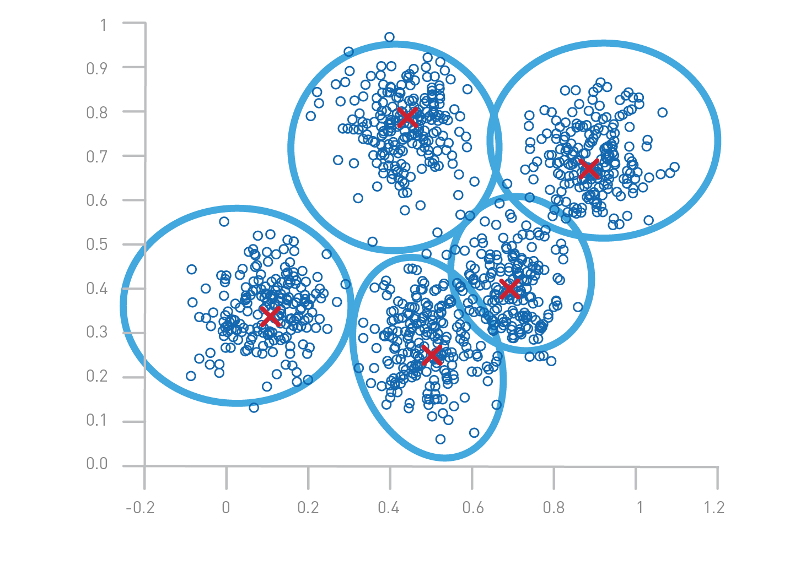
Mentored by Dr. M.V. Panduranga Rao.
description
- Implemented Spherical q-Means from scratch using Qiskit.
- Applied it to Multi-Depot Vehicle Routing Problem with angular clustering considerations.
- Achieved a Davies-Bouldin Index of 0.742 and improved total routing cost across 13 MD-VRP datasets compared to q-Means and Spherical K-Means.
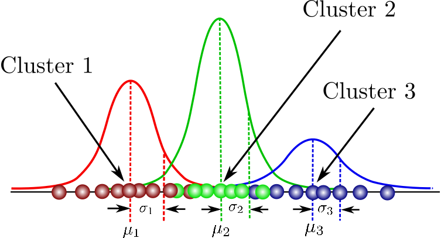
Global Optimization and Knowledge Unearthing Lab, IIT Hyderabad. Mentored by Dr. Kishalay Mitra.
description
- Implemented an ANN-based reformulation of Expectation Maximization for GMM clustering.
- Developed the Neuro-Fuzzy C-Means algorithm in Python using DEAP.
- Achieved an 11.8% improvement in Silhouette Score over GMM clustering.
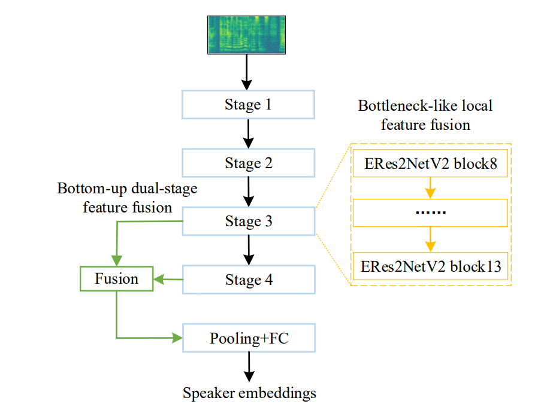
Winner, IEEE Signal Processing Cup 2024. Mentored by Dr. Sri Rama Murty Kodukula.
description
- Worked on speaker authentication under ambient noise, robot noise, reverberation, variable distance, babble noise, and diverse speaker-microphone angles.
- Won the IEEE Signal Processing Cup 2024 and received the $5000 winner prize.
- Built the baseline using score fusion of SEResNet and ECAPA-TDNN on multi-channel data.
- Achieved minDCF 0.7096 on the ROBOVOX dataset, with ensembling lowering EER to 9.59%.
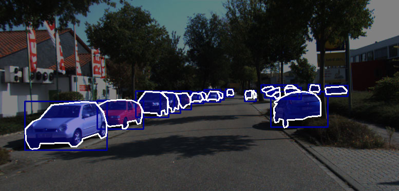
Visual Learning and Intelligence Lab, IIT Hyderabad. Mentored by Dr. C. Krishna Mohan.
description
- Developed an end-to-end pipeline for LiDAR semantic segmentation in autonomous vehicles.
- Enhanced RangeSeg with bicubic and Lanczos interpolation, improving performance on SemanticKITTI, SemanticPOSS, and nuScenes.
- Proposed GAN-based upsampling with SRGAN for challenging environments.
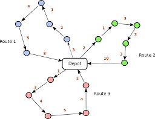
Mentored by Dr. M.V. Panduranga Rao.
description
- Surveyed classical and quantum methods for the vehicle routing problem and its variants.
- Focused on Multiple Vehicle Visits for flexible and efficient routing.
- Compared LP runtime in CPLEX with CQM QPU access time in D-Wave, showing superior CQM performance.
- Explored QUBO formulations and additional routing variants.
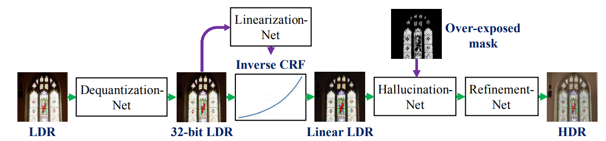
Image and Video Processing project. Mentored by Dr. Sumohana Channappayya.
description
- Implemented single-image HDR reconstruction with a three-CNN model to reverse clipping, non-linear mapping, and quantization.
- Used HDR-SYNTH and HDR-REAL datasets for training and evaluation.
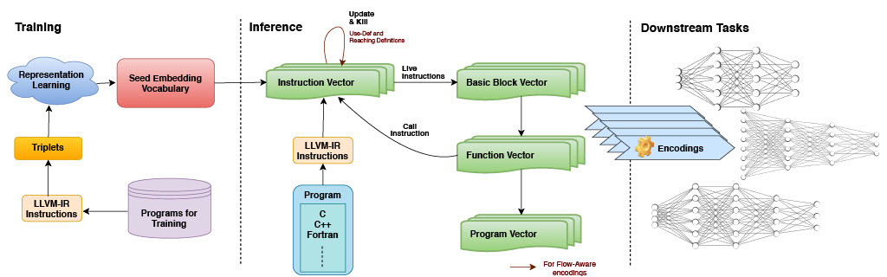
Scalable Compilers for Heterogeneous Architectures Group, IIT Hyderabad. Mentored by Dr. Ramakrishna Upadrasta.
description
- Worked on adversarial training of IR2Vec to mitigate targeted adversarial attacks.
- Generated adversarial examples with FGSM and explored Discrete Adversarial Manipulation of Programs.
Club Projects
Selected club and Inter IIT Tech Meet projects from my time at IIT Hyderabad.
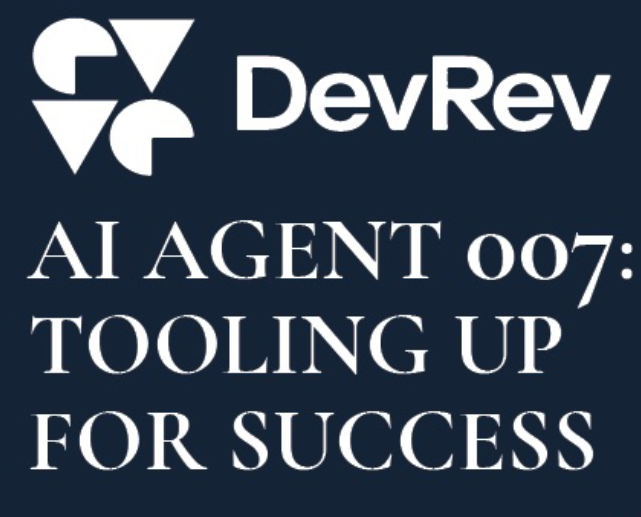
Inter IIT Tech Meet 12.0.
description
- Worked on enabling LLMs to selectively use tools from an open-source toolbox for query responses, targeting competitive performance without closed APIs and minimal human intervention.
- Experimented with GPT-3.5 and GPT-4 for data augmentation and manual tool generation.
- Used TF-IDF retrieval, fine-tuned ColBERT ranking, and a fine-tuned Mistral text generator.
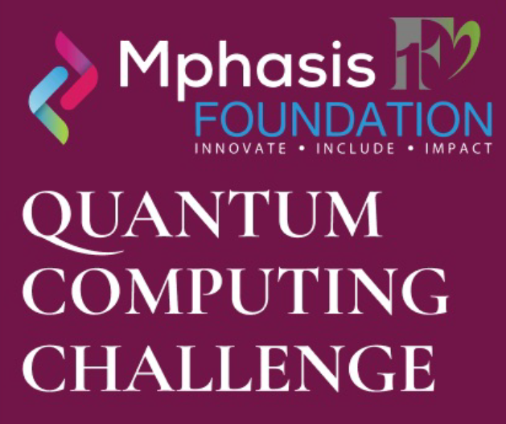
Inter IIT Tech Meet 12.0.
description
- Built a D-Wave-based business rules engine using Discrete Quadratic Models for automated assessment of airline schedule changes.
- Optimized alternate flight selection based on travel time and ancillary service impact.
- Generated default and exception solution files for passengers using industry data models and rules.
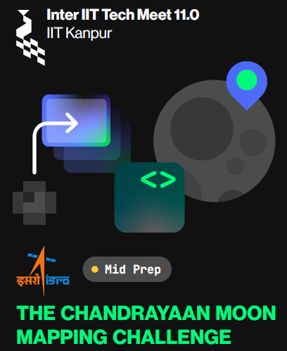
Silver Medal, Inter IIT Tech Meet 11.0.
description
- Built a GAN-based super-resolution model to generate high spatial resolution imagery from TMC-2 images and create a lunar atlas from the generated high-resolution data.
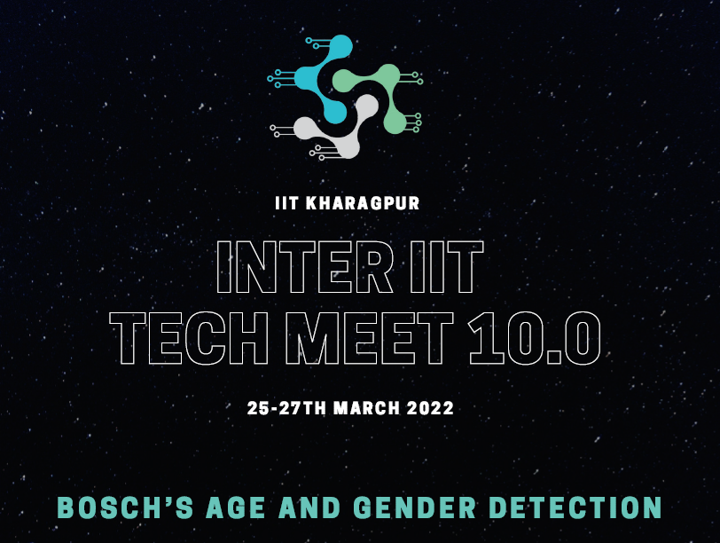
Silver Medal, Inter IIT Tech Meet 10.0.
description
- Identified age and gender from low-resolution surveillance feeds using a pipeline with YOLOv7, MTCNN, age_net, gender_net, and body2gen.
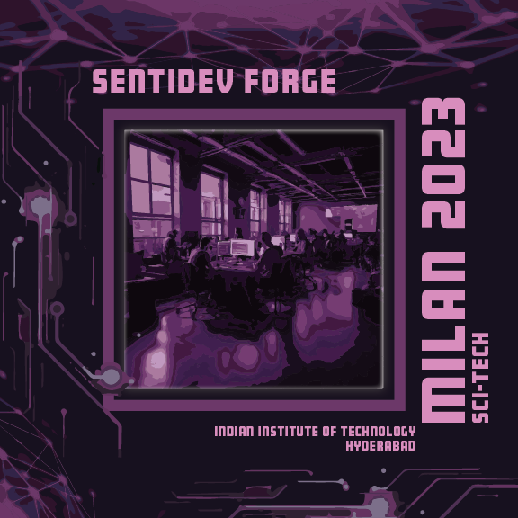
Gold Medal, Milan Inter Hostel Tech Competition.
description
- Built a movie rating and review system where users can create accounts, discover movies, post reviews, add ratings, and engage with movie-related activity.
- Added NextAuth-based authentication, autocomplete movie search, ML-generated opinion summarization, and sentiment-analysis-based clustering of audience reviews.
- Used NextJS with Material UI and TailwindCSS on the frontend, FastAPI and PostgreSQL on the backend, and PyTorch/Transformers for the ML pipeline.